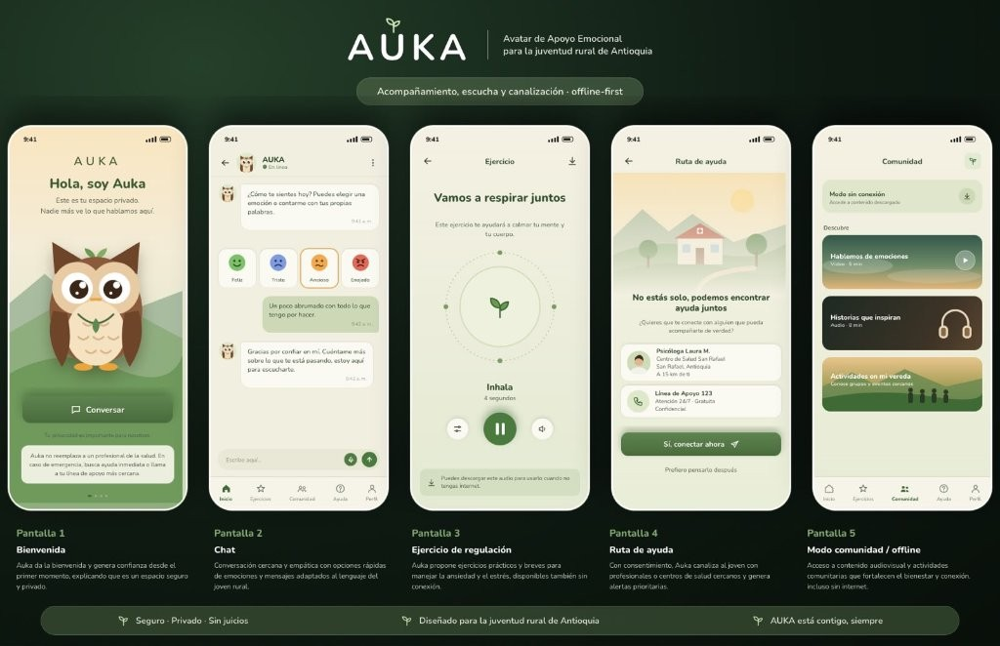

Avatar de Apoyo Emocional para la Juventud Rural de Antioquia
Acompañamiento · Escucha · Canalización — offline-first
En las subregiones de Antioquia existe una brecha crítica en salud mental y bienestar socioemocional de los jóvenes. Sin estabilidad emocional, la juventud rural no puede aprovechar las oportunidades de Antioquia 2040.
Un avatar conversacional de apoyo emocional, disponible las 24 horas, diseñado sobre tres principios que responden directamente a las barreras identificadas.
Conversa con el joven en lenguaje cercano, le ayuda a nombrar y entender lo que siente y ofrece ejercicios de regulación emocional validados por psicología.
Empatía + IAIdentifica señales de tristeza, ansiedad o riesgo y, con consentimiento explícito, activa una ruta de remisión prioritaria hacia profesionales humanos locales. La IA nunca diagnostica ni medica.
Supervisión humanaFunciona con contenido descargable, versión ligera por SMS y actividades comunitarias presenciales con piezas audiovisuales. La IA es puente, no sustituto.
Accesibilidad realCada componente del pipeline de IA tiene una justificación técnica y ética explícita. La privacidad y supervisión humana son criterios de diseño, no adiciones posteriores.
Familia GPT o Claude vía API con fine-tuning ligero y prompting especializado. Guiones y límites diseñados y validados por psicólogos.
Análisis de sentimiento y detección de patrones de crisis. Entrenado con vocabulario y modismos de la ruralidad antioqueña para reducir sesgo cultural.
Módulo opcional para jóvenes con baja alfabetización digital. Permite interactuar con Auka mediante voz.
Anonimización de datos y cifrado. Ninguna conversación queda asociada al nombre del usuario. Consentimiento en cada paso.
Aplicación ligera más versión por mensajes de texto para zonas sin datos. Panel de alertas para profesionales de salud local.
La IA es canal de sensibilización, prevención y puente hacia las redes de salud mental. Nunca un sustituto del profesional humano.
Un sistema de acompañamiento y canalización en salud mental — no una app de entretenimiento ni una herramienta clínica.
Chatbot de apoyo emocional 24/7 con interfaz empática, opciones de emociones rápidas y texto libre.
Core del productoPanel de alertas para psicólogos locales con notificaciones prioritarias y geolocalización de servicios de salud.
CanalizaciónPiezas audiovisuales y dinámicas comunitarias presenciales que rompen el tabú y fortalecen la conexión social.
Impacto socialNavega por las 5 pantallas principales de la aplicación AUKA como si la tuvieras en tus manos.
Este es tu espacio privado.
Nadie más ve lo que hablamos aquí.
Tu privacidad es importante para nosotros. Auka no reemplaza a un profesional de la salud.
Este ejercicio te ayudará a calmar tu mente y tu cuerpo.
¿Quieres que te conecte con alguien que pueda acompañarte de verdad?
Centro de Salud San Rafael
San Rafael, Antioquia · A 15 km de ti
Atención 24/7 · Gratuita · Confidencial
Accede a contenido descargado
Video · 5 min
Audio · 8 min
Conoce grupos y eventos cercanos
Auka da la bienvenida y genera confianza desde el primer momento, explicando que es un espacio seguro y privado.

Perfil del joven rural antioqueño confrontado con el mapa de valor de nuestra solución.
Entender lo que siente, encontrar con quién hablar sin ser juzgado, pedir ayuda a tiempo.
Estigma y miedo al juicio, no hay psicólogo cerca, citas lejanas, mala conectividad, sensación de soledad.
Un espacio privado y seguro, sentirse escuchado, dar un primer paso sin exponerse.
Avatar conversacional 24/7, ejercicios de regulación emocional, ruta de canalización a profesionales, contenido offline y comunitario.
Privacidad y anonimato, funcionamiento sin internet constante, lenguaje y modismos locales, supervisión humana siempre presente.
Acompañamiento sin miedo al juicio, detección temprana, conexión rápida con ayuda real.
No es un chatbot genérico ni una app clínica: es un puente privado, offline-first y culturalmente adaptado entre el joven rural y la red de salud mental humana, con la IA en rol de sensibilización y canalización, nunca de diagnóstico.
La convergencia de cuatro disciplinas garantiza un producto técnicamente viable, éticamente sólido, emocionalmente responsable y narrativamente impactante.
Diseña y valida cada contenido emocional, guiones empáticos, protocolos de primeros auxilios y límites terapéuticos.
Crea la experiencia interactiva, interfaz empática del avatar, prototipo visual y gamificación de la regulación emocional.
Gobernanza ética, régimen de protección de datos de jóvenes rurales, consentimiento informado y marco regulatorio de IA.
Estrategia transmedia, narrativa para romper el tabú cultural y producción de contenidos audiovisuales comunitarios.